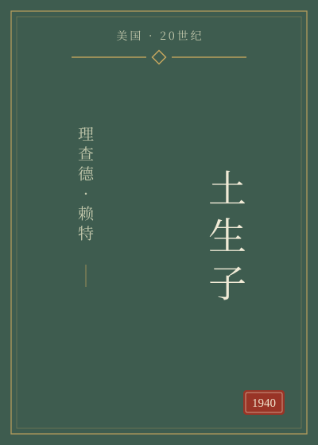
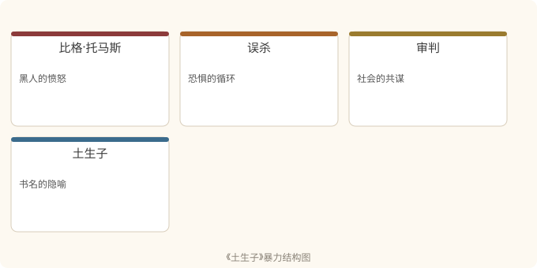

土生子
一、基本信息
| 作者 | 理查德·赖特 |
|---|---|
| 成书/出版 | 1940年（作者页 B335 口径：Native Son 1940） Richard Wright — Encyclopaedia Britannica（百科全书） |
| 国别/地区 | 美国 |
| 时代 | 现当代 · 20世纪 |
| 体裁 | 长篇小说 |
| 语言 | 英语 |

《土生子》暴力结构图（主题·结构图）
二、创作背景
作者页（B335）：'the first African American writer to gain a large white readership'——本作为其成名作。
题材（通说待核）：芝加哥黑人青年比格·托马斯的犯罪与审判——种族主义的暴力循环。
三、内容脉络
误杀→藏尸→逃亡→审判（通说待核）。
四、主要人物表
| 人物 | 身份 | 说明 |
|---|---|---|
| 比格·托马斯 | 黑人青年 | （通说待核） |
五、主题与艺术特点
- 种族主义与暴力（通说待核）。
- 恐惧的循环（通说待核）。
- 自然主义与社会抗议（通说待核）。
六、影响与评论
- Britannica：'the first African American writer to gain a large white readership'（B335）。
Richard Wright — Encyclopaedia Britannica（百科全书） - 作者页：'disturbing and brutally honest'（B335）。
Richard Wright — Encyclopaedia Britannica（百科全书）
七、阅读建议
难点
- 种族主义语境。
- 暴力描写。
- 《土生子》（人民文学出版社/上海译文版本，通说待核）。
- 英文原版。
赖特首选。
八、待核实
- 1940年出版（Harper & Brothers说）核对。
- 比格·托马斯人名核对。
- 书名'Native Son'中译（土生子/ native son）待核。
本页主要来源
理查德·赖特的其他收录作品：土生子